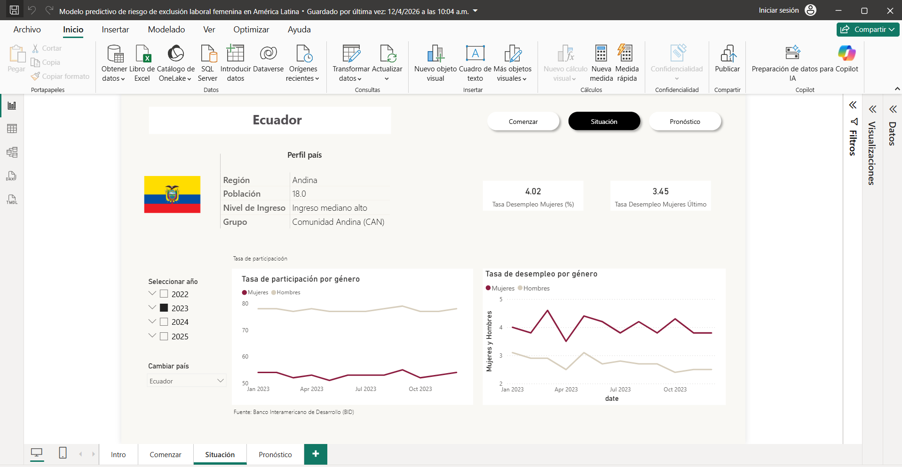
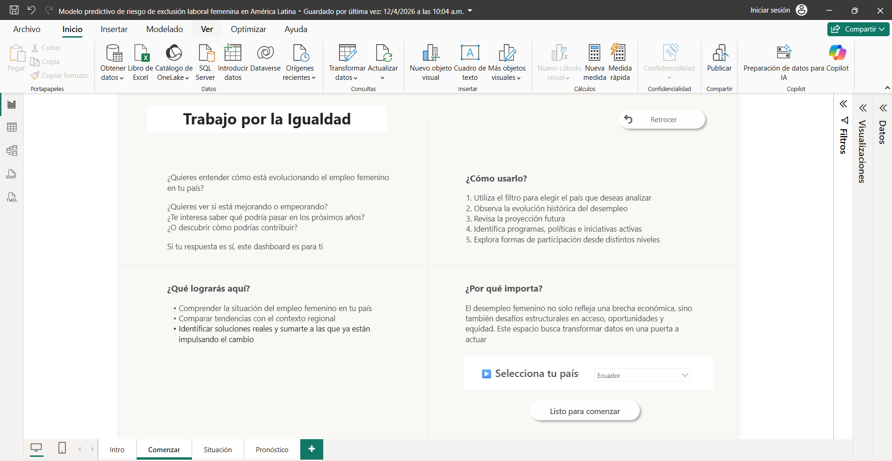
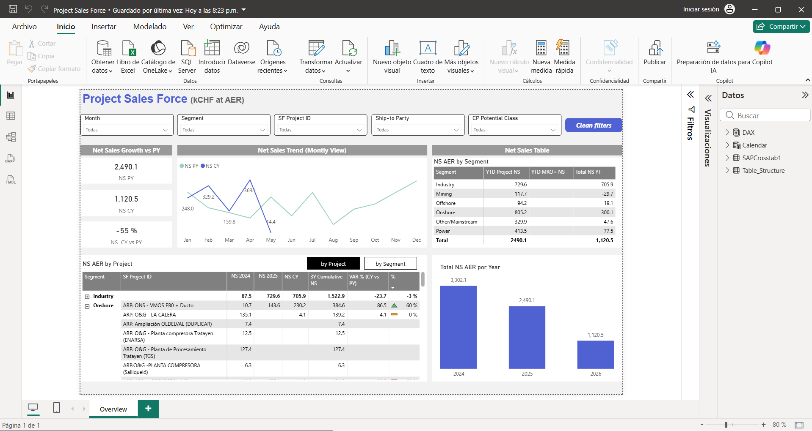
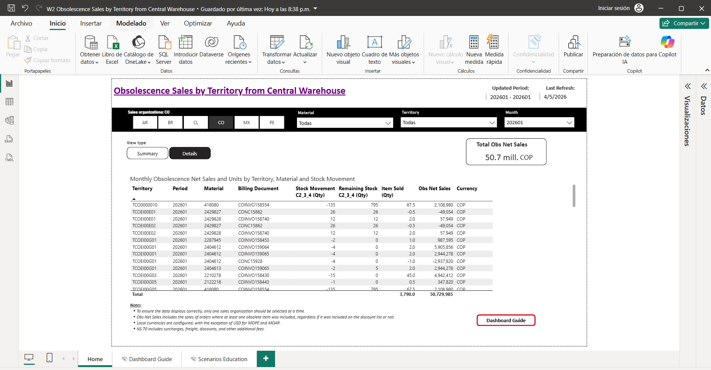

Impact Data Strategist. Transformando datos complejos en estrategias de impacto mediante automatización e Inteligencia Artificial.
Modelo predictivo de riesgo de exclusión laboral femenina en América Latina.


Optimización de procesos operativos y reporting de ventas mediante Power BI.

Sistema de monitoreo logístico y financiero multimoneda.

Conversemos sobre cómo podemos potenciar los resultados de tu organización mediante estrategia de datos.
Escribir a WhatsApp